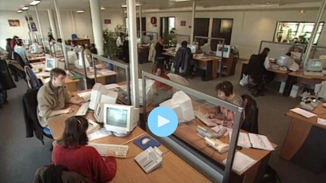
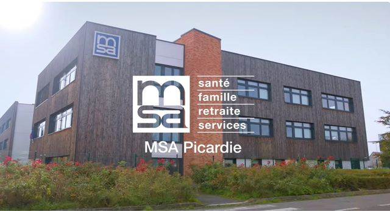

Cas TopiCall · mise en situation · TD 1, 3, 4, 5 et 6
Vous venez d'être recruté·e aux ressources humaines de TopiCall.
Quatre plateformes rachetées une à une, quatre directeurs attachés à leur autonomie, près de 200 salariés et aucune règle RH commune. Rendez-vous sur chaque site, entrez dans les salles, écoutez les équipes et prenez vos décisions. Le corrigé s'affiche après chaque scène.
- 4 plateformes d'environ 50 personnes
- 1 chef d'équipe pour 10 téléconseillers
- Appels sortants pour la banque et l'assurance
- Plage 8 h – 20 h, lundi au samedi
- Formation : 3 % de la masse salariale
- CDI privilégiés, jusqu'à 30 % d'effectifs sans campagne en creux
Avant d'entrer · TD 1
Le secteur des centres d'appels
- Un secteur en croissance. 2,6 milliards d'euros de chiffre d'affaires en 2019 pour les centres d'appels, et +18,6 % entre 2019 et 2021 (Insee).
- Deux modèles. Environ 80 % des centres sont internes aux entreprises, 20 % sont des prestataires externes comme TopiCall (Xerfi).
- Des prestataires très concurrencés. La relation client externalisée employait 51 169 salariés en France en 2020. Moins de la moitié du chiffre d'affaires du marché français (48,5 % en 2021) est réalisée depuis la France : le reste vient de plateformes à l'étranger (EY pour le SP2C).
- Des salariés diplômés. 76 % des employés des centres de contact en France ont au moins le bac (EY pour le SP2C).
- Un travail exposé. Rythme intensif, contrôle des performances en temps réel, stress : l'INRS recommande de laisser de l'autonomie, y compris sur les scripts, et d'alterner les tâches.
- Un démarchage de plus en plus encadré. Liste d'opposition Bloctel, jours et horaires d'appel limités, puis interdiction du démarchage téléphonique sans consentement préalable depuis août 2026, sauf auprès de ses propres clients. Les prestataires relèvent de la convention collective des prestataires de services du secteur tertiaire.
Sources : Insee · étude EY pour le SP2C · Xerfi · INRS
À regarder

1990 : immersion dans l'élite des « call centers » à la françaiseINA · L'INA éclaire l'actu · Florence Dartois, 19 mai 2025
MSA PicardieYouTubePendant le visionnage, repérez :
- ce qui rythme la journée d'un téléconseiller ;
- ce qui est mesuré, écouté ou affiché ;
- ce qui a changé avec la technologie, et ce qui n'a pas changé.
Les vidéos s'ouvrent dans un nouvel onglet.